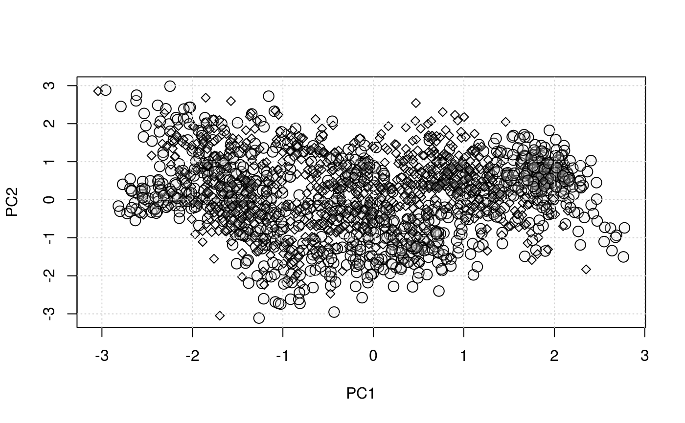

Takes 2 linkS4class{MSnSet} instances as input to plot the
two data sets on the same PCA plot. The second data points are
projected on the PC1 and PC2 dimensions calculated for the first
data set.
plot2Ds(object, pcol, fcol = "markers", cex.x = 1, cex.y = 1, pch.x = 21, pch.y = 23, col, mirrorX = FALSE, mirrorY = FALSE, plot = TRUE, ...)
| object | An |
|---|---|
| pcol | If |
| fcol | Feature meta-data label (fData column name) defining
the groups to be differentiated using different
colours. Default is |
| cex.x | Character expansion for the first data set. Default is 1. |
| cex.y | Character expansion for the second data set. Default is 1. |
| pch.x | Plotting character for the first data set. Default is 21. |
| pch.y | Plotting character for the second data set. Default is 23. |
| col | A vector of colours to highlight the different classes
defined by |
| mirrorX | A |
| mirrorY | A |
| plot | If |
| ... | Additinal parameters passed to |
Used for its side effects of producing a plot. Invisibly
returns an object of class plot2Ds, which is a list
with the PCA analyses results (see prcomp) of
the first data set and the new coordinates of the second data
sets, as used to produce the plot and the respective point
colours. Each of these elements can be accessed with
data1, data2, col1 and code2
respectively.
library("pRolocdata") data(tan2009r1) data(tan2009r2) msnl <- MSnSetList(list(tan2009r1, tan2009r2)) plot2Ds(msnl)#> Error in assign("stockcol", cols, envir = .pRolocEnv): cannot change value of locked binding for 'stockcol'## tweaking the parameters plot2Ds(list(tan2009r1, tan2009r2), fcol = NULL, cex.x = 1.5)## input is 1 MSnSet containing 2 data sets data(dunkley2006) plot2Ds(dunkley2006, pcol = "replicate")#> Error in assign("stockcol", cols, envir = .pRolocEnv): cannot change value of locked binding for 'stockcol'## no plot, just the data res <- plot2Ds(dunkley2006, pcol = "replicate", plot = FALSE)#> Error in assign("stockcol", cols, envir = .pRolocEnv): cannot change value of locked binding for 'stockcol'res#> Error in eval(expr, envir, enclos): object 'res' not foundhead(data1(res))#> Error in data1(res): object 'res' not foundhead(col1(res))#> Error in col1(res): object 'res' not found